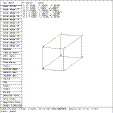
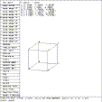

The extrude command is used to move the opposite surface a distance from the specified surface or plate. This command can only be used when an ARB solid is in solid edit state.
 Figure (es8-ex1): ARB8 Rear Face Extruded 5 Units in -Z
mged> extrude 1265 5
mged>
In Figure (es8-ex1) , the plane opposite surface whose points are 1, 2, 6, and 5 is moved to a distance of 5 in the positive Z direction from plane 1265. Note that the points were selected counter-clockwise when viewed in the positive direction along the Z axis.
 Figure (es8-ex2): ARB8 Rear Face Extruded 3 Units in +Z
mged> extrude 1562 3
mged>
In Figure (es8-ex2) , the plane opposite surface 1562 is moved to a distance of 3 in the negative Z direction from 1562. Note that the points were selected clockwise when viewed in the positive direction along the Z axis.
mged> extrude 1265 2
mged>
This restores the original shape of this solid.
To return control to the VIEWING state, select the ``REJECT Edit'' item on the button menu, press the ``reject'' button on the button box, or enter the command press reject on the keyboard. Then, enter
mged> d arb8
mged>
to drop the ARB8 from view.
{kind=link}
{kind=link}